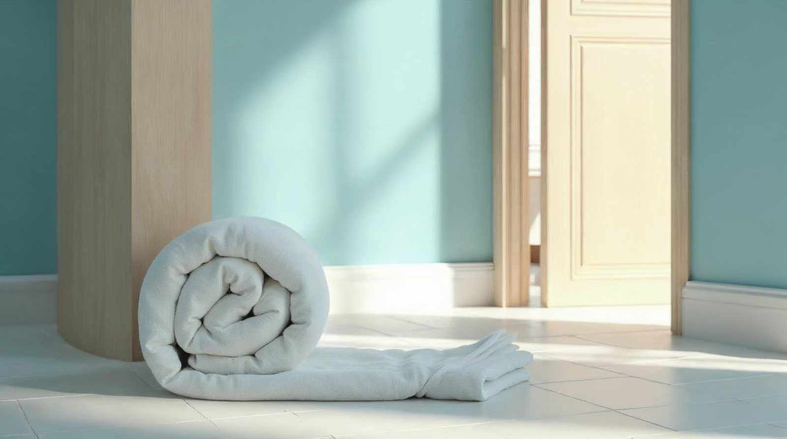
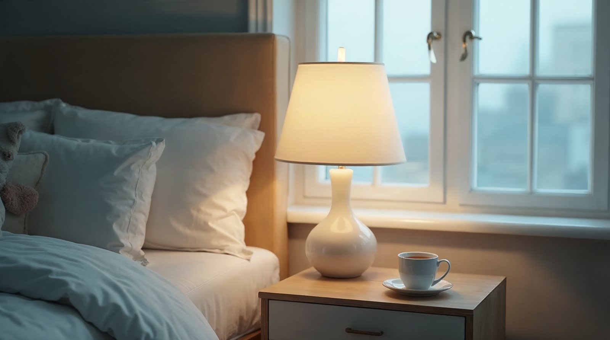
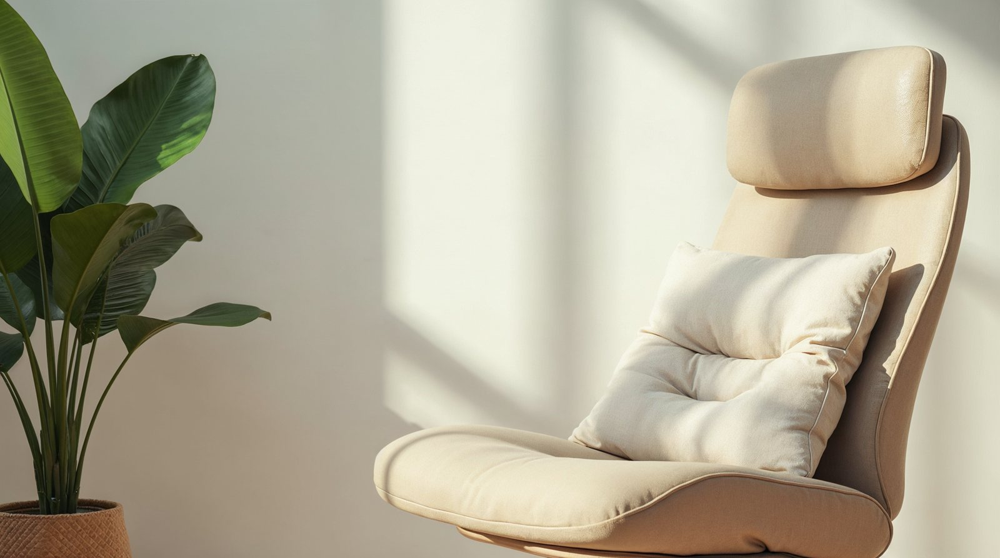
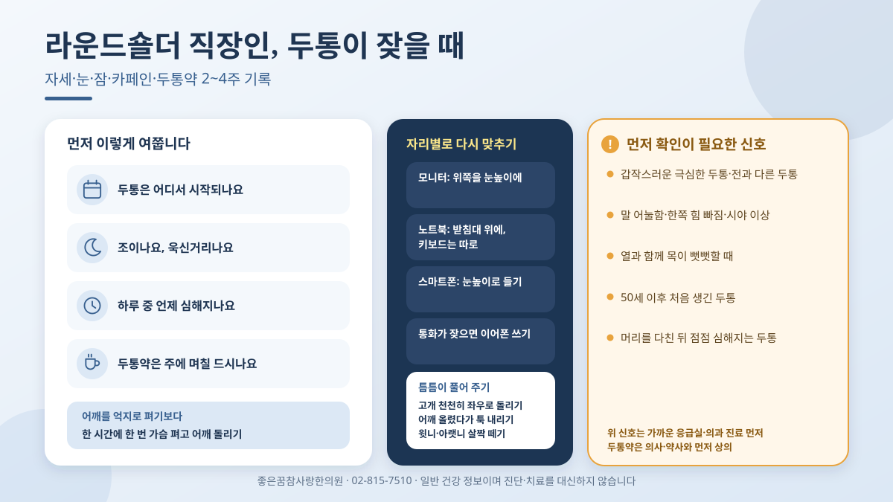

이종호 한의사 감수좋은꿈참사랑한의원 대표원장 (한의사 면허번호 19769)발행 2026-11-26 · 수정 2026-11-26
이 글의 차례
오후 4시, 마감 메일을 쓰다 보면 어느새 화면 쪽으로 고개가 쭉 나가 있습니다. 어깨는 앞으로 말려 키보드 위에 웅크린 모양이고, 뒤통수 아래에서 시작된 묵직함이 머리 양옆을 띠처럼 조여 옵니다.
서랍 속 두통약 상자를 만지작거립니다. 이번 주에만 벌써 세 번째입니다. 퇴근길 지하철에서는 휴대폰을 내려다보느라 고개가 또 숙여지고, 집에 도착할 즈음엔 관자놀이까지 지끈거립니다.
다음 날 아침에는 조금 가벼운 것 같다가도, 점심을 먹고 모니터 앞에 다시 앉으면 같은 하루가 되풀이됩니다.
진료실에서 이런 말씀을 자주 듣습니다. 검사에서는 별 이상이 없다는데 머리가 계속 무겁다는 말씀, 자세 때문인지 스트레스 때문인지 모르겠다는 말씀입니다. 두통약으로 하루하루 넘기면서도, 이렇게 계속 먹어도 되나 마음 한쪽이 불안하다는 분도 많습니다.
머리가 아프면 일이 손에 잘 잡히지 않고, 그런 날은 사람을 대하는 것도 버겁습니다. 겉으로는 멀쩡해 보이니 아프다고 말하기도 애매하지요. 그 답답함을 혼자 오래 안고 계셨을 겁니다.
제 답은 이렇습니다. 어깨가 둥글게 말린 라운드숄더, 머리가 앞으로 나온 거북목 자세는 목 뒤와 어깨 위, 두피를 감싸는 근육을 오래 긴장시켜 머리를 조이는 듯한 두통과 함께 나타나는 경우가 있습니다. 그래서 자세를 살피는 일에는 분명 뜻이 있습니다.
다만 순서가 있습니다. 먼저 지금의 두통이 서둘러 확인해야 할 두통은 아닌지 봅니다.
그다음 두통의 모양과 시작 시각, 모니터·노트북·휴대폰 앞의 자세, 눈의 피로와 잠, 카페인, 두통약을 먹는 횟수를 2~4주 기록해 함께 살핍니다. 자세 하나만 손보면 될지, 같이 챙겨야 할 것이 더 있는지 그 기록이 알려 줍니다.
왜 어깨가 말리면 머리까지 무거워질까요
머리는 생각보다 무겁습니다. 머리가 어깨 바로 위에 얹혀 있을 때는 목이 비교적 편하게 받치지만, 앞으로 나올수록 목 뒤 근육이 그 무게를 붙잡느라 쉬지 못하고 일하게 됩니다. 어깨가 둥글게 말리면 목 옆과 어깨 위 근육까지 함께 긴장하는 경우가 많습니다.
목 뒤 근육은 뒤통수를 지나 두피를 감싸는 근육과 이어져 있습니다. 목 뒤가 굳으면 머리 뒤쪽이 묵직해지고, 이마나 머리 양옆이 띠를 두른 듯 조이는 느낌으로 이어지기도 합니다. 화면을 노려보며 이를 꽉 무는 습관이 있으면 관자놀이 쪽 긴장도 더해집니다.
눈도 쉬지 못합니다. 가까운 화면을 오래 보면 눈 주변과 이마 근육이 함께 긴장하고, 눈을 찡그리는 시간이 길어집니다. 여기에 잠이 모자라고, 커피로 오후를 버티고, 끼니를 거르는 날이 겹치면 같은 자세에서도 두통이 더 쉽게 찾아오는 경우가 많습니다.
한의학에서는 소화와 잠, 마음의 긴장도 두통과 함께 살핍니다. 같은 자세로 같은 시간을 일해도 잠을 설친 주, 속이 불편한 주에 머리가 더 무겁다는 분이 많은 것도 그래서입니다.
모든 두통이 자세에서 오는 것은 아닙니다. 머리 양쪽이 조이거나 누르는 듯하고 움직여도 크게 심해지지 않는 두통은 흔히 긴장형 두통이라 부르는 쪽에 가깝다고 알려져 있습니다. 한쪽이 욱신거리고, 움직이면 더 아프고, 빛과 소리가 거슬리며 속이 메스꺼운 두통은 편두통처럼 성격이 다를 수 있습니다.
이 구분은 진단이 아니라 상담의 출발점입니다. 어느 쪽에 가까운지 적어 오시면 함께 살필 방향이 달라집니다.
먼저 이렇게 여쭙니다
두통으로 오신 분께는 아픈 정도만큼이나 아픈 모양을 자세히 여쭙니다.
- 두통은 뒤통수, 관자놀이, 이마 가운데 어디에서 시작되나요?
- 조이는 느낌인가요, 욱신거리는 느낌인가요?
- 하루 중 언제 심해지나요? 아침인가요, 오후 늦게인가요?
- 하루에 모니터와 휴대폰을 보는 시간은 얼마나 되나요?
- 두통약은 일주일에 며칠 드시나요?
- 잠은 몇 시간쯤 주무시고, 커피는 하루 몇 잔 드시나요?
스스로 먼저 점검해 볼 수 있게 몇 가지를 적어 둡니다. 여러 개가 해당한다면 자세와 생활을 함께 살펴볼 때입니다.
- 옆에서 찍은 사진 속 귀가 어깨 끝보다 한참 앞에 있다.
- 오전보다 오후 늦게 머리가 더 무겁다.
- 뒤통수 아래나 목 뒤를 누르면 단단하고 뻐근하다.
- 화면을 보다 보면 이를 꽉 물고 있는 나를 발견한다.
- 주말이나 휴가 중에는 두통이 덜하다.
- 커피를 거른 날 오후에 머리가 더 아프다.
- 두통약을 먹는 날이 예전보다 늘었다.

일상에서 먼저 해 볼 수 있는 것
- 한 시간마다 고개를 천천히 좌우로 돌리고, 어깨를 귀 쪽으로 올렸다가 툭 내리기
- 손가락 끝으로 두피를 원을 그리듯 1~2분, 아프지 않을 만큼 문지르기
- 윗니와 아랫니가 닿아 있는지 수시로 확인하고 살짝 떼기
- 따뜻한 수건으로 목 뒤를 10분쯤 데우기
- 벽에 등을 대고 뒤통수와 어깨가 함께 닿는지 하루 한 번 확인하기
- 잠드는 시각과 일어나는 시각을 일정하게 두기
두통이 이미 시작됐다면 잠시 화면에서 눈을 떼고, 목 뒤를 데운 뒤 고개를 천천히 돌려 보세요. 조이는 듯한 두통이라면 오래 누워 있기보다 목을 천천히 풀고 가볍게 움직이는 편이 나은 경우가 많습니다.
모니터·노트북·휴대폰, 자리별로 다시 맞춥니다
먼저 동료에게 일하는 옆모습 사진을 한 장 부탁해 보세요. 평소처럼 앉아서요. 귀가 어깨 끝보다 한참 앞에 있다면 화면과 의자부터 손볼 차례입니다. 사진 한 장이 말보다 많은 것을 보여 줍니다.
모니터. 화면 위쪽이 눈높이쯤 오게 하고, 팔을 뻗으면 손끝이 닿을 듯한 거리에 둡니다. 모니터가 두 대라면 가장 오래 보는 화면을 몸 정면에 둡니다. 고개를 한쪽으로 돌린 채 몇 시간을 보내면 한쪽 목과 머리만 더 당기기 쉽습니다.
노트북. 책상에 그대로 두면 화면이 눈보다 한참 아래에 있습니다. 받침대나 두꺼운 책 위에 올려 화면을 높이고, 키보드와 마우스는 따로 쓰시길 권합니다. 카페나 외근지에서 쓸 때도 접이식 받침대 하나면 고개가 덜 숙여집니다.
스마트폰. 휴대폰은 눈높이로 들어 봅니다. 팔이 아프면 반대 손으로 팔꿈치를 받치세요. 출퇴근길에 내려다보는 시간이 길다면, 그 시간의 절반만이라도 고개를 들고 음악이나 음성으로 바꿔 보는 것도 방법입니다.
통화와 의자. 수화기나 휴대폰을 어깨와 귀 사이에 끼우고 통화하면 한쪽 목과 관자놀이가 오래 긴장합니다. 통화가 잦다면 이어폰을 쓰세요. 의자에는 엉덩이를 등받이 끝까지 넣어 앉고, 허리 뒤에 작은 쿠션을 대 봅니다.
어깨를 억지로 뒤로 젖힌 채 버티는 것은 오래가지 못합니다. 힘을 주어 버티면 금방 지치니까요. 그보다 한 시간에 한 번, 가슴을 펴고 어깨를 뒤로 천천히 돌리는 동작을 짧게 되풀이하는 편이 오래 이어 가기 쉽습니다.

눈의 피로·잠·카페인도 같이 봅니다
두통이 잦은 분께 저는 눈 이야기를 꼭 여쭙니다. 20~30분마다 고개를 들어 창밖이나 사무실 끝처럼 먼 곳을 20초쯤 바라보세요. 글자는 찡그리지 않아도 읽힐 크기로 키우고, 안경을 맞춘 지 오래되었다면 도수도 확인해 보세요.
잠은 두통과 가까운 사이입니다. 잠이 모자라거나 잠드는 시각이 들쭉날쭉하면 두통이 더 잦아진다는 분이 많습니다. 주말에 몰아서 늦잠을 자면 월요일 아침이 오히려 무거울 수 있어, 일어나는 시각을 평일과 한 시간 안쪽으로 맞추시길 권합니다.
카페인은 양과 시각을 함께 봅니다. 오후 늦게 마신 커피가 잠을 얕게 하고, 그것이 다음 날 두통으로 이어지기도 합니다. 반대로 매일 마시던 커피를 하루 거르면 머리가 아픈 분도 있어서, 줄일 때는 며칠에 걸쳐 조금씩 줄여 보세요.
에너지 음료에 든 카페인도 함께 셉니다. 끼니를 거르고 물을 잘 마시지 않는 날도 머리가 무거워지기 쉽습니다. 바쁜 날일수록 점심은 같은 시각에 드시고, 물은 책상 위에 두고 조금씩 드세요.
두통약을 자주 드시고 있다면
두통약을 먹으면 일단 일을 이어 갈 수 있으니, 어느새 서랍에 상비약처럼 두고 지내는 분이 많습니다. 저는 그것을 나무라고 싶지 않습니다. 다만 먹는 날이 점점 늘고 있다면 한 번쯤 멈춰서 세어 볼 필요가 있습니다.
두통약을 너무 자주 먹다 보면 약이 오히려 두통을 잦게 만드는 경우가 있다고 알려져 있습니다. 약물과용 두통이라고 부릅니다. 두통약을 먹는 날이 일주일에 두세 번을 넘는 주가 몇 주씩 이어진다면, 처방한 의사나 약사와 먼저 상의해 보세요.
이때도 혼자 갑자기 끊거나 줄이지는 않습니다. 언제, 어떤 약을, 몇 알 드셨는지 적어 가시면 상담이 훨씬 수월합니다. 한의원에 오실 때도 그 기록과 약 이름을 가져와 주세요.

예를 들어 이런 경우가 있습니다
예를 들어 노트북 한 대로 사무실과 외근지, 집을 오가며 일하는 직장인의 경우입니다. 화면이 늘 낮아 고개가 숙여지고, 오후 3~4시쯤 뒤통수부터 조여 오는 두통을 이야기하는 분이 많습니다. 받침대와 따로 쓰는 키보드부터 마련하고, 두통이 시작되는 시각을 2주 적어 볼 수 있습니다.
예를 들어 하루 종일 전화 상담을 하며 수화기를 한쪽 어깨에 끼우는 직장인의 경우, 같은 쪽 목과 관자놀이가 유독 당긴다고들 하십니다. 이어폰으로 바꾸고, 통화가 끝날 때마다 어깨를 귀 쪽으로 올렸다가 툭 내려 보세요.
예를 들어 마감 주마다 커피가 늘고 잠이 줄었다가, 주말 늦잠 뒤 월요일 아침에 머리가 무거운 직장인의 경우입니다. 자세만큼 잠과 카페인의 흐름이 두통에 겹쳐 있는 경우가 많습니다. 마감 주에도 일어나는 시각과 커피 마지막 잔 시각부터 정해 두시길 권합니다.
한의원에서 함께 살필 수 있는 경우
- 목과 어깨가 늘 뻐근하면서 두통이 되풀이되는 경우
- 턱 주변이 피곤하고 두통이 함께 있는 경우
- 두통약을 먹는 횟수가 늘어 걱정되는 경우
- 다른 병원 검사에서 큰 이상은 없다고 들었지만 두통이 이어지는 경우
처음 오시면 저는 양손을 올려 봐 달라고 말씀드리고 맥부터 짚습니다. 처음 오신 분이든 다시 오신 분이든 모든 분의 맥을 짚습니다.
맥을 짚으면서 두통이 생기는 상황을 충분히 듣습니다. 언제부터, 어디에서 시작해 어떤 모양으로 아픈지, 하루 중 언제 심한지, 그 전에 무엇을 하고 있었는지 여쭙고, 잠과 소화, 대소변, 요즘 마음의 긴장도 함께 여쭙습니다. 필요하면 혀도 봅니다.
몸은 앉은 모습을 옆에서 보며 귀와 어깨의 위치를 보고, 고개를 돌리고 숙이고 젖히는 움직임, 목 뒤와 두피, 턱 주변의 긴장을 살핍니다. 팔의 감각과 힘도 확인합니다.
좋은꿈참사랑한의원에서는 이렇게 살핀 뒤 침과 추나 가운데 지금 상태에 맞는 방법을 정합니다. 추나는 머리에서 목, 등, 골반까지 한 단계씩 진행하며 단계마다 팔 힘을 다시 확인합니다. 신경과 등 다른 의료기관 확인이 먼저라고 판단되면 그쪽을 먼저 안내합니다.
진료를 마치기 전에는 집과 사무실에서 풀어 볼 방법과 화면 높이를 함께 정합니다. 자세가 몸에 익기까지는 시간이 걸린다는 점도 처음에 말씀드립니다. 평일은 09:30~20:00(점심 13:00~14:00), 토·일·공휴일은 09:30~15:00에 진료하니 퇴근 뒤나 주말에 오셔도 됩니다.
이렇게 기록해 오시면 상담이 쉬워집니다
- 두통이 시작된 시각과 위치, 모양(조임·욱신), 점수(0~10)
- 두통약을 먹은 날과 약 이름, 횟수
- 잠든 시각과 일어난 시각
- 커피·에너지 음료의 잔 수와 마지막 잔을 마신 시각
- 그날 화면 앞에 있던 시간, 일하는 책상의 옆모습 사진
2~4주만 적어도 두통이 오는 요일과 시각, 그 앞에 있던 일이 겹쳐 보이기 시작합니다. 빠진 날이 있어도 괜찮습니다. 기억나는 만큼만 적어 오세요.
마치며
라운드숄더와 잦은 두통은 하루아침에 생긴 것이 아니어서, 하루아침에 정리되지도 않습니다. 그래도 화면 높이 하나, 한 시간에 한 번 고개를 드는 습관 하나, 두통이 온 시각을 적는 한 줄은 오늘부터 할 수 있습니다.
그동안 머리가 아픈 날에도 맡은 일을 해내셨을 겁니다. 이제는 그 머리를 받쳐 온 목과 어깨에도 조금 쉴 틈을 주셨으면 합니다. 다음에 오시면 두통 기록장에서 두통이 시작된 시각과, 그 직전에 무엇을 하고 계셨는지부터 여쭙겠습니다.
이런 증상은 먼저 확인이 필요합니다
- 갑자기 시작된 처음 겪는 극심한 두통, 또는 말 어눌함·한쪽 팔다리 힘 빠짐·갑작스러운 시야 흐림이나 심한 눈 통증
- 열과 함께 목이 뻣뻣한 두통, 머리를 다친 뒤나 지금까지와 달리 점점 심해지고 잦아지는 두통
이런 신호가 있으면 한의원보다 가까운 병원이나 응급실을 먼저 찾으세요.
함께 읽으면 좋은 글
- 모니터를 오래 보고 나면 눈이 뻑뻑하고 이마와 관자놀이가 아플 때는 어떻게 하나요?
- 거북목과 라운드숄더는 집에서 어떤 스트레칭을 해 볼 수 있나요?
- 잠을 못 자면 두통이 올 때는 어떻게 살피나요?

여쭙는 것
- 두통은 뒤통수, 관자놀이, 이마 가운데 어디에서 시작되나요?
- 조이는 느낌인가요, 욱신거리는 느낌인가요?
- 하루 중 언제 심해지나요? 아침인가요, 오후 늦게인가요?
생활에서 해 볼 것
- 한 시간마다 고개를 천천히 좌우로 돌리고, 어깨를 귀 쪽으로 올렸다가 툭 내리기
- 손가락 끝으로 두피를 원을 그리듯 1~2분, 아프지 않을 만큼 문지르기
- 윗니와 아랫니가 닿아 있는지 수시로 확인하고 살짝 떼기
한의원에서 함께 살필 것
- 목과 어깨가 늘 뻐근하면서 두통이 되풀이되는 경우
- 턱 주변이 피곤하고 두통이 함께 있는 경우
- 두통약을 먹는 횟수가 늘어 걱정되는 경우
먼저 확인이 필요한 신호
- 갑자기 시작된 처음 겪는 극심한 두통, 또는 말 어눌함·한쪽 팔다리 힘 빠짐·갑작스…
- 열과 함께 목이 뻣뻣한 두통, 머리를 다친 뒤나 지금까지와 달리 점점 심해지고 잦아…
한눈에 보는 표
| 구분 | 핵심 |
|---|---|
| 여쭙는 것 | 두통은 뒤통수, 관자놀이, 이마 가운데 어디에서 시작되나요? 조이는 느낌인가요, 욱신거리는 느낌인가요? |
| 생활에서 해 볼 것 | 한 시간마다 고개를 천천히 좌우로 돌리고, 어깨를 귀 쪽으로 올렸다가 툭 내리기 손가락 끝으로 두피를 원을 그리듯 1~2분, 아프지 않을 만큼 문지르기 |
| 한의원에서 함께 살필 것 | 목과 어깨가 늘 뻐근하면서 두통이 되풀이되는 경우 턱 주변이 피곤하고 두통이 함께 있는 경우 |
| 먼저 확인이 필요한 신호 | 갑자기 시작된 처음 겪는 극심한 두통, 또는 말 어눌함·한쪽 팔다리 힘 빠짐·갑작스러운 시야 흐림이나 심한 눈 통증 열과 함께 목이 뻣뻣한 두통, 머리를 다친 뒤나 지금까지와 달리 점점 심해지고 잦아지는 두통 |
자주 묻는 질문
라운드숄더 자세를 바로잡으면 두통도 사라지나요?
두통은 원인이 여러 가지라 자세 하나로 정해 말씀드리기 어렵습니다. 목·어깨·두피의 긴장과 함께 눈의 피로, 잠, 카페인, 두통약 횟수를 2~4주 기록하며 흐름을 함께 살핍니다.
두통약을 자주 먹는데 줄여야 할까요?
혼자 줄이거나 끊지 마시고 처방한 의사나 약사와 먼저 상의하세요. 먹은 날과 약 이름을 적어 두면 상담에 도움이 됩니다. 한의원에 오실 때도 드시는 약을 알려 주시면 그에 맞춰 살핍니다.
어깨를 의식해서 계속 펴고 있으면 되나요?
힘을 주어 버티면 금방 지칩니다. 한 시간에 한 번 가슴을 펴고 어깨를 뒤로 천천히 돌리는 동작을 짧게 되풀이하는 편이 오래 이어 가기 쉽습니다.
좋은꿈참사랑한의원은 재진 때 지난번 이야기부터 이어서 여쭙니다. 진료시간과 예약은 오시는 길에서 확인하세요.
어디서 상담받을 수 있나요?
좋은꿈참사랑한의원은 서울 동작구 만양로2길 2 신성빌딩 3층·5층(서울 동작구 상도동, 7호선 상도역 3번 출구 근처)에 있습니다. 한의사 3명(이종호 대표원장, 조영기 수석진료원장, 정원영 진료원장)이 진료합니다. 진료시간은 평일 09:30~20:00(점심 13:00~14:00), 토·일·공휴일 09:30~15:00이며, 방문 전 전화로 확인을 권합니다. 예약은 네이버 예약, 카카오톡 상담, 전화 02-815-7510로 받습니다.
이 글은 일반적인 건강 정보이며 개인의 진단이나 치료를 대신하지 않습니다. 증상이 있거나 복용 중인 약이 있다면 진료를 통해 확인하세요. 치료 효과는 개인마다 다를 수 있습니다.
작성 기준: 일반적으로 알려져 있는 건강 정보를 참고해 정리했습니다(대표원장 감수). 증상 기록은 1~2주 동안 하루 1회, 비슷한 시간에 적어 오시면 지난 상태와 비교하기 쉽습니다.